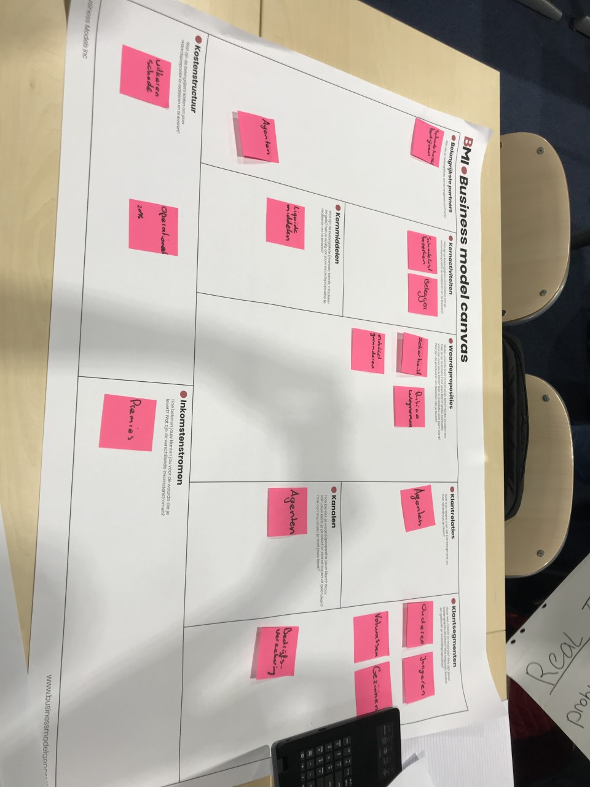
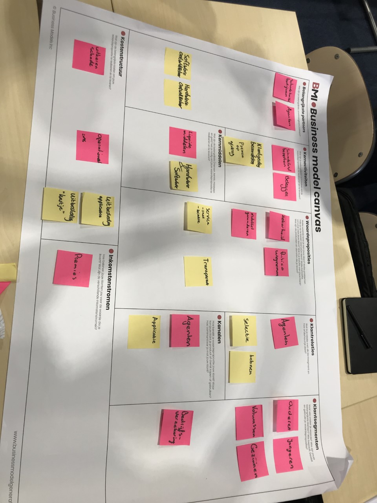
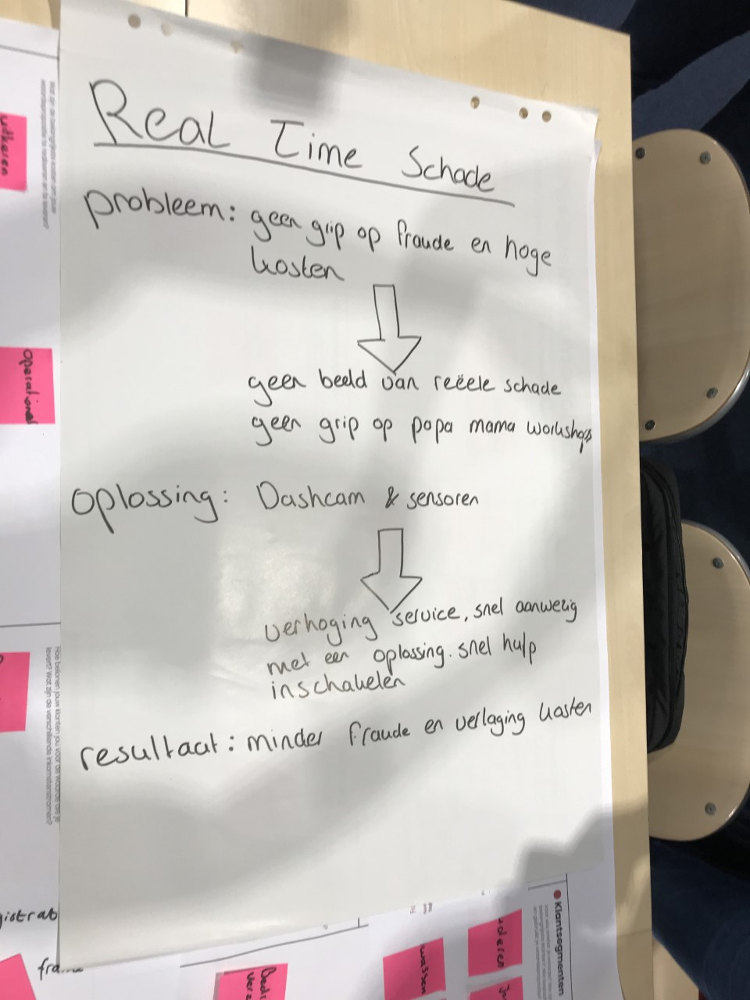
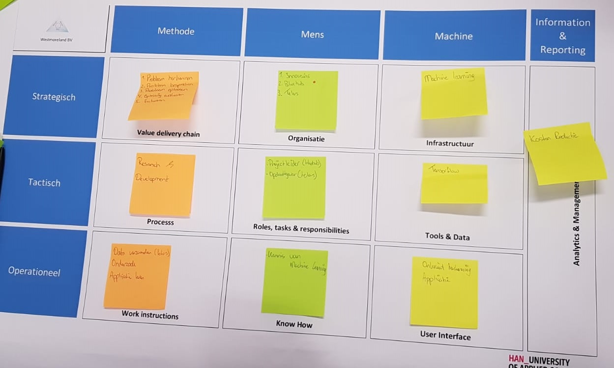

Geert Rensen Beinformed
In de lessen Smartbusiness kregen wij een gastles van Geert Rensen, dit ging over de verzekeraar uit India. Zij hadden het probleem dat er teveel onterechte schadeclaims waren en of Beinformed daar een mogelijk oplossing voor zou hebben.
Het probleem was dat er schadebedrijven te hoge kosten van het reparen claimde ten op zichte van de werkelijke kosten.
HGiervoor moesten we een BMC maken van de huidige situatie maken en kijken waar de mogelijkheden liggen. Onze oplossing was om met bepaalde schadebedrijven een samenwerking mee te beginnen.
Hierdoor werk je alleen samen met een bedrijf dat je kan vertrouwen. Om er voor te zorgen dat de mensen met schade aan hun auto ook daadwerkelijk naar de opgegeven schadebedrijven gaan kan je werken met een beloning. Bijvoorbeeld dat je alleen een leenauto krijgt wanneer je naar de opgegeven bedrijven gaat.
Natuurlijk doen al vele verzekeraars dat dus wilde we daarbij nog een nieuwe oplossing toevoegen. Onze oplossing is om dashcams en sensoren te monteren in de verzekerde auto's.Als er dan een ongeluk is gebeurd kan je door middel van de sensoren en de dashcam een ruwe schatting maken van de schade aan de auto.
Hierdoor kan je later makkelijker inschatten of de schadeclaim wel realistisch is. Ook kan je doormiddel van de dashcam zien wie de schuldige van het ongeluk is en wat er is gebeurd.
Hierna werd een nieuw BMC model gemaakt met de nieuwe situatie(te herkennen de gele notepads)



Paul Kalis Target Operating Model
Een Target Operating Model, ook wel TOM genoemd, is het kijken naar de stappen die in een bedrijf gemaakt worden. Van de handelingen tot de tools die er nodig zijn.
Paul Kelis kwam dit 15 November vertellen vanuit zijn praktijk ervaring op zijn werk omdat hij zich hier constant mee bezig houdt. Na zijn presentatie kwam de opdracht
om het nu te beschrijven vanuit je eigen project. Ik werk hier samen aan met Breyten Kouwenberg en Thijs van Leerdam en lopen het project vanuit Blueberry Innovaters.
Hiervan uit hebben we alle stapen beschreven die vanuit Blueberry Innovaters aanwezig zijn. Deze stappen kan je hieronder zien op de foto.

Inleiding ATAG en Opdracht
De studenten kregen de opdracht om een bedrijf uit te kiezen zonder voorkennis en dan zich in te lezen en daarna op zoek te gaan naar wat een mooie toevoeging zou zijn voor het bedrijf.
ATAG is een bedrijf gespecialiseerd is kookapparatuur zoals (stoom)ovens, afzuigkappen, koelkasten/vriezers, kookplaten, vaatwassers en koffiemachines. ATAG wilt de ervaring in de keuken steeds makkelijker maken voor de consument en heeft hiervoor haar eigen applicatie ontwikkeld; ATAG Connect Life.
Deze app zorgt er voor dat al het kookapparatuur van ATAG met elkaar in verbinding is.
De app heeft een aantal functies:
· Recepten bekijken (met kookboek functie)
· Inspiratie opdoen
· Boodschappenlijst opstellen
· Notificaties voor onderhoud van apparatuur (en hoe dit gedaan moet worden)
Maar ook handige functies voor het koken als:
· Voorverwarmprogramma instellen
· Notificaties wanneer programma gereed / klaar is
· Temperatuur van koelkast instellen
· Afzuiger automatisch starten wanneer kookplaat aan gaat.
Wij hebben een aantal alternatieven bedacht waarmee ATAG haar applicaties kan verbeteren/ aanvullen.
Al deze nieuwe innovaties kunnen in de toekomst gekoppeld worden met Google-Home of SIRI. Op deze manier wordt de kookervaring nog beter, maar vooral makkelijker voor de consument
SMART koelkast
ATAG is een bedrijf dat zich specialiseert op keukenapparatuur. ATAG heeft de koelkast al verbonden met een APP, echter zijn er toch verbetering om de koelkast te verbeteren voor de ervaring bij de consument. Hieronder wordt stap voor stap beschreven hoe de koelkast voor SMART ervaring kan zorgen.
-houdbaarheidsdatum controleren: in de smart koelkast wordt een camera geplaatst met meerdere functies, één van die functies is het controleren op de houdbaarheidsdatum. De koelkast scant de producten in de koelkast om te controleren hoe lang de inhoud in de koelkast nog geldig zijn. Wanneer een product over de datum is of bijna over de datum is krijg je een melding. Dit zorgt ervoor dat bijvoorbeeld het product verstopt in de koelkast niet over de datum gaat zonder dat je iets door had.
-voorraad: een andere functie van de camera is om te kijken of er producten ontbreken in de koelkast. Hierdoor kan je vanuit een supermarkt zien wat er nog aangeschaft moet worden en wat niet. Dit is een mooie oplossing van het teveel kopen omdat je niet zeker weet wat je al in huis hebt en niet.
-boodschappenlijst: doordat de camera de voorraad checkt doet de koelkast via de app ook suggesties voor de boodschappenlijst. Op de app komt een digitale boodschappenlijst waar je zelf producten aan toe kan voegen maar ook de koelkast. Wanneer de koelkast merkt dat er een product niet meer aanwezig is krijg je een notificatie om het ontbrekende product toe te voegen aan je digitale boodschappenlijst. Hierdoor loop je nooit iets mis bij het winkelen
-temperatuur: door middel van sensoren meet de koelkast de temperatuur van de koelkast, wanneer er bijvoorbeeld een storing is en de temperatuur daalt of als de koelkast niet goed gesloten is daalt de temperatuur snel. Dit kan zorgen voor eten dat gaat bederven. Wanneer de koelkast merkt dat de temperatuur te snel daalt zal er een melding worden gegeven op de telefoon. Hierdoor komen mensen erachter dat er iets mis is en kunnen ze daar op spelen, bij een storing bijvoorbeeld snel een monteur inschakelen en bij een open deur iemand waarschuwen om de deur weer dicht te doen en zo vele problemen voorkomen.
Oven, magnetron en combi-stoomoven
De ATAG combi-stoomovens zijn verbonden met de ATAG connect life app. De ATAG combi-stoomoven magnetron kan met deze app worden op afstand worden bedient. Zo kunnen via de app de temperatuur en tijd worden ingesteld en geeft de app een melding wanneer timer verlopen is en het eten klaar is. Daarnaast stuurt de app ook notificaties wanneer onderhoud nodig is.
Een aantal verbeteringen / nieuwe functies die aan de app toegevoegd kunnen worden:
De ATAG oven en magnetron ook aan de app toevoegen, zodat ook de temperatuur en tijd van de oven en magnetron op afstand ingesteld kunnen worden en de app ook voor deze apparaten een melding geeft wanneer de timer verlopen is.
Rooksensor
Wanneer het eten aan het aanbranden is dat er via de app een melding binnen komt. Dit kan bijvoorbeeld gedaan worden door een rooksensor in de oven te plaatsen. Deze kan meten wanneer het eten aanbrand en stuurt zo een melding. Via de app kan de oven dan uitgeschakeld worden of er kan van te voren al ingesteld worden dat wanneer het eten aanbrand de oven zichzelf automatisch uitgeschakeld.
Camera
Met de camera kun je live meekijken hoe de status is van het gerecht of het al gaar is etc. Zo hoef je niet continu naar de oven te gaan om het gerecht in de gaten te houden, maar kan dit via de app in de gaten worden gehouden.